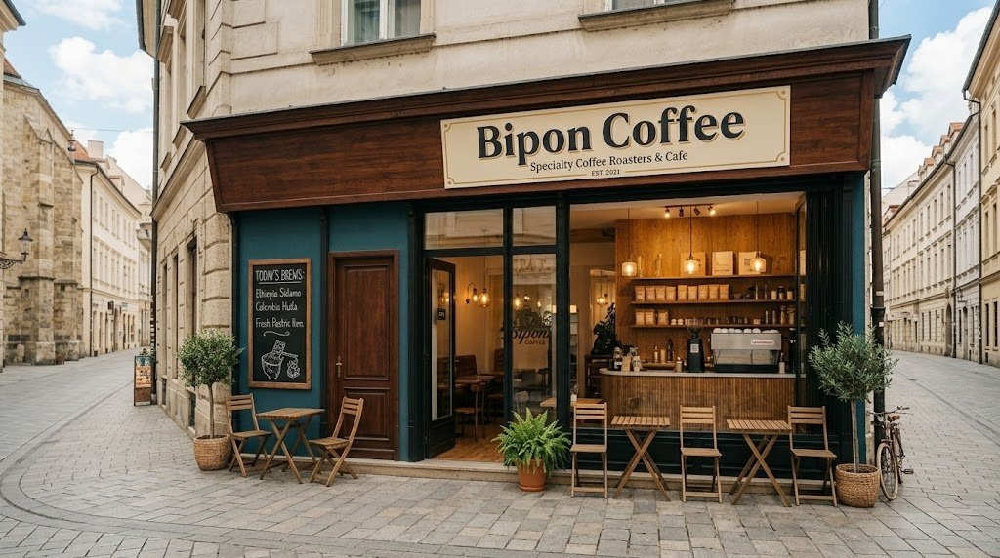

Our Signature Espresso Blend
Bipon Coffee was founded with a passion for bringing ethically sourced, high-quality coffee beans to our local community. Our signature house blend is crafted using 100% Arabica beans harvested from high-altitude farms across South America. Every batch is carefully micro-roasted in-house to unlock rich notes of dark chocolate, toasted hazelnut, and subtle caramel sweetness. Whether you need an early morning pick-me-up or a cozy place to work, our coffee is crafted to perfection.
Milestone Timeline
- 2021 – Initial concept and recipe testing began.
- 2022 – Opened our first pop-up coffee stand in Brew City.
- 2023 – Launched our fully custom espresso bar and indoor seating.
- 2024 – Expanded our menu to include cold brew and specialty teas.
- 2025 – Partnered with local organic farms for dairy and plant milk.
Quick Facts
- 100% fair-trade and organic certified beans.
- Roasted fresh twice a week on site.
- Offers dairy-free milk alternatives at no extra charge.
- Zero-waste policy with eco-friendly compostable cups.
Gallery

Customer Testimonials
"Bipon Coffee serves the most flavorful espresso in the city, making every visit an unforgettable experience."
Watch Our Roasting Process
Short clip showing how we roast our beans:
Learn More About Ethical Coffee Farming
Learn more about ethical coffee farming on the Fairtrade Official Website.